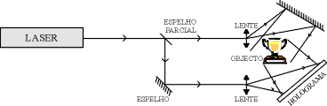

Testes para o Holograma.
Para fazer alguns testes no holograma, aqui vai uma lista de alguns hologramas que podem ser vistos, clique em qual queira ver para ser direcionado ao video.
- Holograma de corpo se movendo.
- Holograma de DNA.
- Holograma de dinossauro correndo.
- Torre Eiffel.
- Hologramas para o Halloween.
- Fogos de Artifício.
- Plasma Dubstep.
- Saturno.
- Animais.
- Fantasma.
- Fogo.
Pode ser encontrados outros Hologramas pesquisando por hologramas na barra de pesquisa do youtube.
O que são Hologramas?
Os hologramas são os registros de objetos que quando são iluminadas de maneira especifica permitem a observação do que lhe deu origem, permitindo reconstruir uma imagem com informação tridimensional.
Como se fazem?
Para a construção de um holograma, é preciso de uma fonte de luz laser para a iluminação do objeto que se predente registrar. A luz dada pelo laser é dividida em dois feixes, sendo um dos feixes(feixe objeto), utilizada para iluminar o objeto. A luz refletida é dispersa pelo objeto e a luz que vem do segundo feixe é depois recolhida simultaneamente pela superfície onde vai ser registrado o holograma.

Onde se registram?
São diversos materiais onde o holograma pode se registrar e variam de acordo com a aplicação que se predende dar ao holograma. Na criação de um holograma, a propriedade comum a todos os materiais é a de ser sensível a luz. Nestes materiais após a exposição à luz, o processo de revelação efetuado de forma certa, permite registrar diferenças espaciais na intensidade da luz com dimensões inferiores ao comprimento de onda da radiação laser utilizada para fazer o holograma. Os materiais mais utilizados são peliculas ou placas de vidro.
Outros interesses: